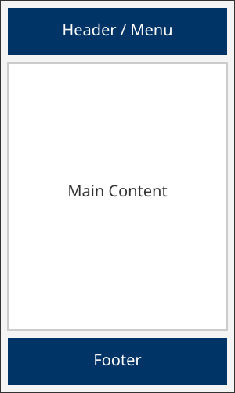
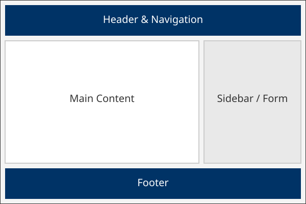

1. Site Name
Elpo Interview Coaching
Reason: "Elpo" is the Greek word for "a confident expectation of good." This perfectly captures the mindset and preparation I want to instill in every job seeker before they step into an interview.
2. Site Purpose
The purpose of this website is to provide a professional platform where job seekers can access career development resources, review common behavioral interview questions with expert tips, and formally book a 1-on-1 mock interview coaching session.
3. Scenarios
- "What are the most common behavioral questions asked in modern tech interviews, and how should I answer them?"
- "How can I book a personalized mock interview coaching session, and what are the available services?"
4. Color Schema
This document actively uses the selected color schema to demonstrate its application:
- Primary Color (Deep Navy Blue - #003366): Used for the header, footer background, and main section headings to convey trust, stability, and professionalism.
- Accent Color (Vibrant Gold - #FFB300): Used for highlights, borders, and interactive buttons to symbolize success and draw the user's attention.
- Background Color (Off-White - #F8F9FA): Used for the main body background to keep the site clean and highly readable.
- Text Color (Charcoal - #333333): Used for all standard paragraph text to provide excellent, accessible contrast against the light background.
5. Typography
This document actively uses the selected fonts to demonstrate their application:
- Headings (Montserrat): A modern, clean sans-serif font used for all h1, h2, and h3 tags to give the site a polished, structured look.
- Body Text (Roboto): A highly legible, approachable sans-serif font used for all paragraphs, lists, and general reading content.
6. Wireframes
Below are the structural layouts for the Home page in both Mobile and Desktop views.
Mobile View

Desktop View
